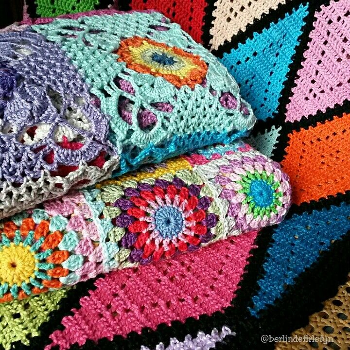

This is the start of a wonderful journey
If you're looking for a new hobby, you’ve come to the right place. Crochet is not just a hobby though, it's so much more! It can be a stress reliever, a way to make great gifts for friends, family, coworkers or an activity to get your creative juices flowing! Whether you're crocheting based on a pattern or free handing your creation there are so many different things you can make! Here at the CrochetHut we have a ton of information just for you to be able to learn the ways of crochet! If you head over to the stitches tab you’ll learn how to hold your yarn as well as your hook, all the basic crochet stitches you will need to know for your first project. Later on you will even find that we have some more advanced stitches. Included on the page we have a list of all the supplies you will need and links to easily be able to purchase them as well as a few simple to advanced patterns to get you working on a project right away! In the stitches tab we will give you detailed descriptions of many basic stitches, how to hold your hook and yarn, and even a small list of supplies that you'll want to buy to get started.
Here you can learn the ins and outs of crochet! The page will be updated frequently to keep you busy with new stitches
Stitches
In our first tab above will be descriptions of many starter stitches.